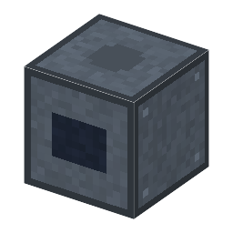

スキャナー（ステップ・アンド・スキャン）
Scanner (Step-and-Scan)・ブロック・Semiconductor
仮（まだ本物どおりでない所がある）
本当の歴史：[9-39] 縮小投影露光（1978年）

説明
①子ども 細いすき間の光で、マスクと板を一緒に動かしながら焼く露光装置。今の工場の露光装置はほとんどこれ。
②学生 ステッパー＋ボールねじ×2＋モーター＋鋼×4＋銅ケーブル。入口はステッパーと同じ＋右下にマスクの台のねじ（送りねじ／ボールねじ）。レンズの細い帯だけを使うので、同じレンズでもステッパーより細い線が焼ける。マスクの台のずれは 1/4 になって重ね合わせに入る。
③大人 1990年代、ステッパーの次の世代として、1チップの中をスリットでなぞって焼く「ステップ・アンド・スキャン」の装置が広まった。マスクの台と板の台が逆向きに、4:1 の速さでぴったりそろって動く。
④ガチ チップ全体を一度に写すには、大きく完全なレンズが要る。スリットならレンズの中心の細い帯だけを使えばよく、収差の少ないところだけで像を作れる。そのかわり、2つの台をナノメートルの精度で同時に動かす制御が要る。